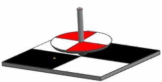
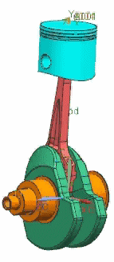
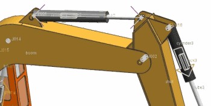

问题
1
2
3
在这个示例中，陀螺与与上表面通过3D 接触连接，那么应该使用哪种扭矩来使陀螺旋转？

请选择一个答案。
在这个示例中，力施加在这个活塞的顶部，应该使用哪种力？

请选择一个答案。
在这个示例中，力施加在液压活塞的两个端点之间，应该使用哪种力？

请选择一个答案。
错误！
正确！
标量扭矩必须作用在运动副上，并采用旋转副的旋转轴。矢量扭矩可以作用在连杆上，它可以绕绝对坐标系的轴，或者绕着已定义的矢量。在这个示例中，绕矢量定义的矢量扭矩是通过选择手柄顶部的边来定义的。
标量力总是作用在两个连杆之间，并且力的方向由附着点确定。在这个示例中，没有连杆直接位于活塞顶部的相反侧。矢量力作用在活塞顶部，方向为绝对坐标系的竖直方向，通过一个函数来定义力的大小。
标量力总是作用在两个连杆之间，并且力的方向由附着点确定。在这个示例中，标量力作用在组成这个活塞的两个连杆的端点之间。